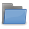
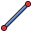
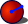

L' atelier PartDesign fournit des outils avancés pour la modélisation de pièces complexes et solides et est basé sur une méthodologie d'édition de fonctions. Il est étroitement lié à l' atelier d'esquisse.
{kind=link}
Contents
Concepts de base
Méthodologie d'édition de fonctions
Alors que l'atelier Part et d'autres ateliers FreeCAD construisent des modèles en combinant des formes, l'atelier PartDesign utilise des fonctions. Une fonction est une opération qui modifie la forme d'un modèle.
La première fonction est communément appelée la fonction de base. Au fur et à mesure que de nouvelles fonctions sont ajoutées au modèle, chaque fonction prends la forme de la fonction précédente et ajoute ou enlève de la matière, créant des dépendances directes d'une fonction à la suivante. Cette méthodologie imite un procédé de fabrication typique : un bloc est coupé sur un côté, puis sur un autre côté, des trous sont percés, puis des congés appliqués, etc.
Toutes les fonctions sont listées de façon séquentielle dans l'arborescence Modèle et peuvent être modifiées en tout temps, avec la dernière fonction représentant la pièce finale.
Les fonctions peuvent être classées selon différentes catégories :
- Basée sur profil : ces fonctions partent d'un profil pour définir la forme de la matière à ajouter ou enlever. Le profil consistera en une esquisse, une face plane de la géométrie existante (un profil sera extrait de ses arêtes), une forme liée ou un objet Draft qui aura préalablement été inclus dans le corps actif.
- Additive : ajoute de la matière au modèle existant. Les fonctions additives ont des icônes de couleur jaune.
- Soustractive : enlève de la matière du modèle existant. Les fonctions soustractives ont des icônes de couleurs rouge et bleu.
- Basée sur primitive : basée sur des primitives géométriques (cube, cylindre, cône, tore...). Elles peuvent être additives ou soustractives.
- Fonctions de transformation : elles appliquent une transformation à des fonctions existantes (symétrie, répétition linéaire ou circulaire, transformation multiple).
- Habillage : ces fonctions appliquent un traitement à des arêtes ou des faces, tels que des arrondis/congés, chanfreins ou dépouilles.
- De procédure : peut être dit de fonctions qui ne sont pas basées sur des profils, comme les fonctions de transformation et d'habillage.
Corps
Le Corps est un conteneur qui groupe une séquence de fonctions formant un solide unique.
Qu'est-ce qu'un solide unique ? Il s'agit d'un objet comme une pièce coulée ou usinée à partir d'un bloc de métal. Si l'objet contient des clous, des vis, de la colle ou de la soudure, ce n'est pas un solide unique. Par exemple, une chaise en bois sera faite de plusieurs corps, avec un corps pour chacune de ses composantes (pieds, lattes, siège, etc.).
Un document FreeCAD peut contenir plusieurs corps ; ils peuvent aussi être combinés pour former un solide unique.
Lorsqu'un modèle nécessite plusieurs corps, comme la chaise de l'exemple précédent, le conteneur Part d'usage général peut être utilisé pour les grouper et les déplacer comme un tout.
Gestion de la visibilité du corps
Un corps expose à l'extérieur par défaut la fonction la plus récente. Cette fonction est définie par défaut comme la fonction résultante. On peut utiliser l'analogie de la pointe de l'iceberg : seule la fonction résultante est visible hors de l'eau, le reste de l'iceberg (les autres fonctions) sont cachées. Lorsqu'une nouvelle fonction est ajoutée au corps, la fonction précédente est automatiquement masquée, et la nouvelle fonction devient la fonction résultante.
Il ne peut y avoir qu'une seule fonction visible à la fois. Il est possible de basculer la visibilité de toute fonction dans le corps, en la sélectionnant dans l'arborescence Modèle et en appuyant sur la touche d'espacement, ce qui a l'effet de remonter dans l'historique du corps.
Origine du corps
Le corps possède une Origine qui comprend des plans de référence (XY, XZ, YZ) et des axes (X, Y, Z) qui peuvent être utilisés par des esquisses et des fonctions. Les esquisses peuvent être attachées à des plans de l'Origine, et il n'est plus nécessaire de les appliquer sur des faces planes pour que les fonctions basées sur celles-ci ajoutent ou enlèvent de la matière du modèle.
Déplacer et réordonner des objets
Il est possible de redéfinir temporairement la fonction résultante sur une fonction au milieu de l'arborescence du Corps pour insérer de nouveaux objets (fonctions, esquisses ou géométrie de référence). Il est également possible de réordonner les objets sous un Corps, ou les déplacer dans un autre Corps. Sélectionnez l'objet et faites un clic droit pour faire apparaître le menu contextuel qui propose les deux options. L'opération pourrait échouer si l'objet a des dépendances au Corps source, comme être attaché à une face. Pour déplacer une esquisse vers un autre Corps, celle-ci ne devrait pas contenir de liens à des géométries externes.
Géométries de référence
Les géométries de référence consistent en des plans personnalisés, des droites, des points ou des formes liées de l'extérieur du corps. Elles peuvent être créées afin de servir de référence à des esquisses et des fonctions. Il y a une multitude de possibilités d'attachement des géométries de référence.
Référencement croisé
Il est possible de référencer des éléments d'un corps à un autre à travers les géométries de référence. Par exemple, la forme liée permet de copier des faces d'un corps comme référence dans un autre corps. Cela devrait faciliter la modélisation d'une boîte et de son couvercle dans deux corps distincts. FreeCAD vous aide à ne pas créer de liens accidentels vers d'autres corps et s'enquiert de vos intentions.
Attachement
L'attachement d'objets n'est pas un outil spécifique à PartDesign, mais plutôt un outil de l'atelier Part introduit dans la version 0.17 et qui se trouve dans le menu Pièce. Il est fortement utilisé dans l'atelier PartDesign pour fixer des esquisses et des géométries de référence à des plans et axes standards du Corps. Des moyens très complets de création de points de référence, de droites et de plans sont disponibles. Les paramètres facultatifs de compensation d'attachement rendent cet outil très polyvalent.
Consulter la page Attachement pour plus d'informations.
Conseils pour la création de modèles robustes
Le principe de conception paramétrique sous-tend que quand les valeurs de certains paramètres sont changées, les étapes subséquentes seront automatiquement mises à jour selon ces nouvelles valeurs. Toutefois, quand des changements importants sont apportés, le modèle peut casser. À comparer des précédentes versions de FreeCAD, les bris peuvent être minimisés en suivant les principes de conception suivants :
- Fondamentalement, vous devez cesser d'appliquer des esquisses sur des faces - totalement ! Appliquez vos esquisses sur des plans standards, ou encore sur des plans de référence.
- Lors de la création de géométrie de référence, ne la basez pas sur la topologie de la pièce, mais sur les axes/plans standard et/ou des esquisses.
- Utilisez une « esquisse maîtresse ». Il s'agit d'une esquisse pas trop complexe qui contient les éléments géométriques de base de votre modèle. Ces éléments peuvent être référencés lors de la création des fonctions subséquentes. Une esquisse maîtresse sera généralement la toute première esquisse du Corps, mais ça n'est pas obligé ; en fait, vous n'avez pas à l'utiliser autrement que pour la création de références.
- Si vous devez inévitablement référencer une fonction intermédiaire, par exemple le résultat d'une fonction d'évidement, utilisez la première référence disponible dans la liste de fonctions subséquentes où l'élément géométrique référencé se trouve. À partir de FreeCAD 0.17, vous n'avez plus à utiliser obligatoirement la dernière fonction dans l'arborescence. Si vous utilisez une des premières fonctions comme référence,tout changement affectant les fonctions suivantes ne brisera pas votre modèle. Et à nouveau, il est préférable de se référer à une esquisse plutôt qu'aux arêtes et aux sommets d'un solide.
Les outils
Les outils Part Design sont situés dans le menu Part Design qui apparaît lorsque l'atelier Part Design est chargé.
Outils Structure
Il s'agit d'outils pour organiser l'arborescence Modèle.
- Pièce: ajoute un conteneur Pièce dans le document actif et le rend actif.
-  Groupe: ajoute une Groupe dans l'arborescence du document actif.
{kind=link}
{kind=link}
Outils d'assistance Part Design
 Créer un corps : crée un corps dans le document actif et le rend actif.
Créer un corps : crée un corps dans le document actif et le rend actif.
-
 Créer une esquisse : crée une nouvelle esquisse sur un plan ou une face sélectionnée. Si rien n'est sélectionné, l'utilisateur est invité à sélectionner un plan dans le panneau Tâches. L'interface bascule ensuite vers l'atelier Sketcher en mode d'édition d'esquisse.
Créer une esquisse : crée une nouvelle esquisse sur un plan ou une face sélectionnée. Si rien n'est sélectionné, l'utilisateur est invité à sélectionner un plan dans le panneau Tâches. L'interface bascule ensuite vers l'atelier Sketcher en mode d'édition d'esquisse.
-
 Éditer l'esquisse : édite l'esquisse sélectionnée.
Éditer l'esquisse : édite l'esquisse sélectionnée.
-
 Appliquer une esquisse : applique une esquisse sur une face ou un plan sélectionné du corps actif.
Appliquer une esquisse : applique une esquisse sur une face ou un plan sélectionné du corps actif.
Outils de modélisation Part Design
Outils de référence
- Créer un point de référence : crée un point de référence dans le corps actif.
{kind=link}
-  Créer une ligne de référence : crée une ligne de référence (droite) dans le corps actif.
{kind=link}
 Créer un plan de référence : crée un plan de référence dans le corps actif.
Créer un plan de référence : crée un plan de référence dans le corps actif.
 Créer une forme liée : crée une forme liée dans le corps actif.
Créer une forme liée : crée une forme liée dans le corps actif.
 Créer un clone : crée un clone dans le corps actif.
Créer un clone : crée un clone dans le corps actif.
Outils additifs
Ces outils permettent de créer des fonctions de base ou d'ajouter de la matière à un corps solide existant.
-
 Protrusion : extrude un objet solide à partir de l'esquisse sélectionnée.
Protrusion : extrude un objet solide à partir de l'esquisse sélectionnée.
- Révolution : crée un solide par révolution d'une esquisse autour d'un axe. L'esquisse doit former un profil fermé.
{kind=link}
 Lissage additif : crée un solide en réalisant une transition entre au moins deux esquisses.
Lissage additif : crée un solide en réalisant une transition entre au moins deux esquisses.
 Balayage additif : crée un solide en balayant une ou plusieurs esquisse(s) le long d'un chemin ouvert ou fermé.
Balayage additif : crée un solide en balayant une ou plusieurs esquisse(s) le long d'un chemin ouvert ou fermé.
- Créer une primitive d'addition : ajoute une primitive d'addition dans le corps actif.
 Cube additif : crée un cube additif.
Cube additif : crée un cube additif.
- Cône additif : crée un cône additif.
{kind=link}
 Cylindre additif : crée un cylindre additif.
Cylindre additif : crée un cylindre additif.
 Ellipsoïde additif : crée un ellipsoïde additif.
Ellipsoïde additif : crée un ellipsoïde additif.
 Prisme additif : crée un prisme additif.
Prisme additif : crée un prisme additif.
 Sphère additive : crée une sphère additive.
Sphère additive : crée une sphère additive.
 Tore additif : crée un tore additif.
Tore additif : crée un tore additif.
 Cale additif : crée une cale additive.
Cale additif : crée une cale additive.
Outils soustractifs
Ces outils permettent d'enlever de la matière à un corps solide existant.
-
 Cavité : crée une cavité à partir de l'esquisse sélectionnée.
Cavité : crée une cavité à partir de l'esquisse sélectionnée.
-
 Perçage : crée une fonction perçage à partir de l'esquisse sélectionnée. L'esquisse doit contenir un ou plusieurs cercles.
Perçage : crée une fonction perçage à partir de l'esquisse sélectionnée. L'esquisse doit contenir un ou plusieurs cercles.
-
 Enlèvement de matière par révolution: crée une rainure par révolution d'une esquisse sur un axe.
Enlèvement de matière par révolution: crée une rainure par révolution d'une esquisse sur un axe.
 Lissage soustractif : crée un solide en réalisant une transition entre au moins deux esquisses puis la soustrait du corps actif.
Lissage soustractif : crée un solide en réalisant une transition entre au moins deux esquisses puis la soustrait du corps actif.
- Balayage soustractif : crée un solide en balayant une ou plusieurs esquisse(s) le long d'un chemin ouvert ou fermé puis le soustrait du corps actif.
{kind=link}
- Soustraire une primitive : soustrait une primitive du corps actif.
 Cube soustractif : crée un cube soustractif.
Cube soustractif : crée un cube soustractif.
- Cône soustractif : crée un cône soustractif.
{kind=link}
 Cylindre soustractif : crée un cylindre soustractif.
Cylindre soustractif : crée un cylindre soustractif.
 Ellipsoïde soustractif : crée un ellipsoïde soustractif.
Ellipsoïde soustractif : crée un ellipsoïde soustractif.
 Prisme soustractif : crée un prisme soustractif.
Prisme soustractif : crée un prisme soustractif.
-  Sphère soustractive : crée une sphère soustractive.
{kind=link}
 Tore soustractif : crée un tore soustractif.
Tore soustractif : crée un tore soustractif.
 Cale soustractive : crée une cale soustractive.
Cale soustractive : crée une cale soustractive.
Outils de transformation
Ces outils permettent d'appliquer une transformation au moyen de fonctions existantes. Elles vous permettront de choisir quelles fonctions utiliser.
-
 Symétrie : crée une fonction de symétrie par rapport à un plan ou une face.
Symétrie : crée une fonction de symétrie par rapport à un plan ou une face.
-
 Répétition linéaire : crée une fonction de répétition linéaire basée sur une ou plusieurs fonctions.
Répétition linéaire : crée une fonction de répétition linéaire basée sur une ou plusieurs fonctions.
-
 Répétition circulaire : Crée une fonction de répétition circulaire à partir d'une ou plusieurs fonctions.
Répétition circulaire : Crée une fonction de répétition circulaire à partir d'une ou plusieurs fonctions.
-
 Transformation multiple : crée une combinaison de n'importe quelle des autres transformations.
Transformation multiple : crée une combinaison de n'importe quelle des autres transformations.
Outils d'habillage
Ces outils appliquent un traitement aux arêtes ou faces sélectionnées.
-
 Congé : applique un arrondi/congé sur les arêtes sélectionnées du corps actif.
Congé : applique un arrondi/congé sur les arêtes sélectionnées du corps actif.
-
 Chanfrein : applique un chanfrein sur les arêtes sélectionnées du corps actif.
Chanfrein : applique un chanfrein sur les arêtes sélectionnées du corps actif.
-
 Dépouille : applique un angle de dépouille aux faces du corps actif.
Dépouille : applique un angle de dépouille aux faces du corps actif.
 Épaisseur: évide le corps actif et le transforme en un objet creux à paroi épaisse et creuse la (ou les) face(s) sélectionnée(s).
Épaisseur: évide le corps actif et le transforme en un objet creux à paroi épaisse et creuse la (ou les) face(s) sélectionnée(s).
Booléen
 Opération Booléenne : importe un ou plusieurs corps ou clones PartDesign dans le corps actif et applique une opération Booléenne.
Opération Booléenne : importe un ou plusieurs corps ou clones PartDesign dans le corps actif et applique une opération Booléenne.
Extras
Des fonctionnalités supplémentaires se trouvent dans le menu Part Design :
- Migrer : migre des fichiers créés dans des versions antérieures de FreeCAD. Si le fichier ne contient que des fonctions PartDesign, la migration devrait réussir. Si le fichier contient des objets mixtes Part/Part Design/Draft, la conversion échouera presque certainement.
-
 Assistant de conception d'arbre : génère un arbre à partir d'un tableau de valeurs et permet d'analyser les forces et les moments. L'arbre est construit à partir de la révolution d'une esquisse qui peut être modifiée.
Assistant de conception d'arbre : génère un arbre à partir d'un tableau de valeurs et permet d'analyser les forces et les moments. L'arbre est construit à partir de la révolution d'une esquisse qui peut être modifiée.
- Engrenage en développante: crée un profil d'engrenage à profil en développante de cercle qui peut ensuite être utilisée pour une protrusion.
{kind=link}
 Désigner comme fonction résultante: redéfinit temporairement la fonction résultante, qui est la fonction affichée du corps.
Désigner comme fonction résultante: redéfinit temporairement la fonction résultante, qui est la fonction affichée du corps.
- Déplacer vers un autre corps: déplace l'objet sélectionné (esquisse, géométrie de référence ou fonction) vers un autre corps.
- Déplacer après un autre objet: permet de réorganiser l'arborescence en déplaçant l'objet sélectionné (esquisse, géométrie de référence ou fonction) vers une autre position dans la liste des entités.
Préférences
 Preferences...: Préférences disponibles dans les outils PartDesign.
Preferences...: Préférences disponibles dans les outils PartDesign.
Tutoriels
- Créer une pièce simple avec PartDesign v0.17
- Didacticiel sur la conception des pièces de base v017
- PartDesign Bearingholder Tutorial I (en) (nécessite une mise à jour)
- PartDesign Bearingholder Tutorial II (en) (nécessite une mise à jour)
Liens
- What's new in PartDesign Next
- Updated PartDesign workflow
- FC v0.17dev: Part Design Next Usecases and Best practices
- Sandbox:Part Design Next